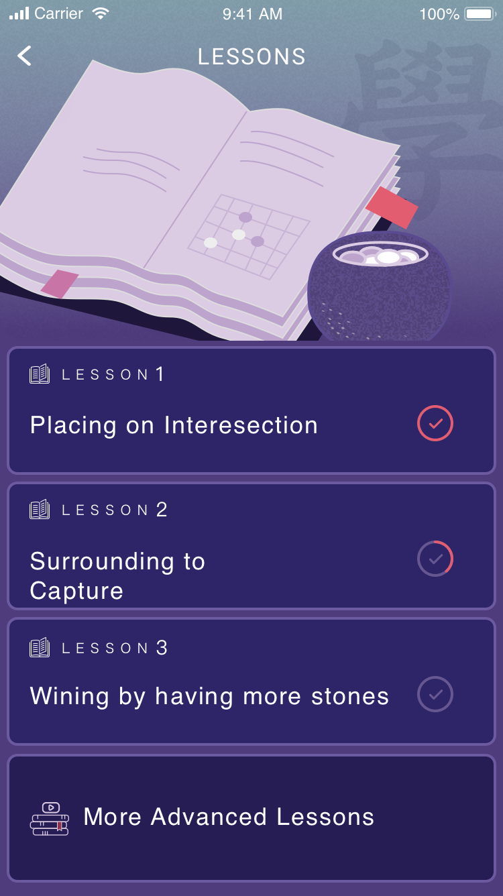

Hello, I am Minchen.
An UXUI & Service Designer!
An UXUI & Service Designer!


Learn more about what I do

Learn more about what I do

I am Minchen Lin, a passionate and experienced UXUI and Service Designer with 5 years of practical experience in this field, who is trained by diverse projects in Taiwan and in Germany. With my Information and Service Design background, I have systematic thinking with business consideration, and like to be a voracious problem solver.
TOOLS I USE


LANGUAGES I SPEAK


STUFF I LIKE


I put user in my mind, and dig for insights. I do synthesis of business, technology, and aesthetic to ideate every possibility. By testing and iterations I deliver meaningful and valuable solutions.


DISCOVER & DEFINE
Do design research to empathy users, and people in the ecosystem
Then expose real reasons or core issues behind their motivations and actions
DESIGN & DELIVER
Based on user insights, do ideation. Also consider business viability and technical feasibility. Then use prototype for testing and communication to shape ideas
Define and design strategy and business models are important too, which make ideas "from Sketchbook to Spreadsheet"


2019-2020
Taiwan | 2018
Taiwan | 2017
Taiwan | 2016
Taiwan | 2016
Germany | 2014
|
Overview The ancient game: Go (Weiqi), which with rich strategy is widely regarded as the ultimate thinking game. To lower a barrier to entry and to promote this brain-friendly game, we came out JunGo. |
Final Design
JunGo provides a quick and simple tutorial. Take 10 mins to learn rules, and strengthen the Go skill by real plays with JunGo AI! There are 4 main features in JunGo: LESSONS, GAME, DOJO, and MY PROFILE. Check the detailed design below.
|
LESSONS 3 simple lessons with illustrations to make the rule easy to understand. Also, there are some quizzes behind each lesson to make sure beginners know how rules are applied in a real game. |

|
 | |||||

|

|

|
GAME Accumulate your GO experience by real play! JunGo provides 10 levels of AI bot as the opponent and the difficulty will be auto-adjusted by tracking the progress of the player. Players could also customize the settings by themselves (JunGo AI will learn from their manual settings as well). |
||||
|
DOJO Load any of the game records to DOJO and use the slider to play back/forth to any specific move. Use "Hint" and "Land" function to review uncertain moves. Players could retry any of the moves to get different results and save it. Learning by practices! |

|
||||||

|
Profile Players could find all game records (win/lose/draw) in the profile page. Tapping a record card will load the game and redirect to DOJO page. |
||||||
|
Overview We designed the investigation platform to help Trend Micro internal operation team to deliver Managed Detection and Response (MDR) service, which covers 24/7 monitoring, alerts correlation, threat hunting and investigation. |
Background Since attackers have become more sophisticated, enterprises must turn to more advanced detection and response capabilities. However, an ordinary in-house IT team has no related expertise for threat investigation. To close this gap, Trend Micro provides the MDR service which covers advanced incident response and proactive threat hunting. |
Discover & Define
Unlike other projects, this offering is not a product but a service provided by global Trend Micro operation team. In the early stage, we host an internal Value Proposition workshop to sync up our core values with all stakeholders. And our output would be research materials for external validation that keep us on the right course.
 |
After the workshop, based on services/features we broke down, I delivered wireframes of Threat Investigation Center. And this concept wireframe was demonstrated to analysts in the U.S.. |
Design
The Threat Investigation Center combines log aggregation, heuristic analysis and includes essential/useful investigation tasks (e.g., sweeping, sample collection). So the design will be focused on the presentation of analytic results and a fluent investigation flow.
Wireframe
This investigation platform is really complex, which includes bunch of information/data from different Trend Micro products. So we need to simplify and make usage flows consistent. Also, because there are too many connectors and backend flows within this product, we defined the UI presentation for API errors.
High-Fidelity Design
In order to improve legibility of data and reduce eye fatigue, we changed the background from light theme to dark theme.

|
After drilling down to a specific case, users could have an overview/summary of the attack, and create further investigation tasks. |
|
Provide Alert Rules management page to let users define the query criteria and other details. |

|

|
Leverage rich data from the platform to enable the creation and measurement of tailored metrics for users |
This product is based on agile software development methodology with a monthly release cycle. As the main designer, I need to work closely with product and project managers to plot a clear yearly roadmap. Then I could plan long-term and short-term research topics with researchers. To fit in the schedule, sometimes I need to compromise on the ideal solution, but I would add all UX gaps in the product backlog and keep tracking them.
Deliver
In May 2018, Managed Detection and Response services was globally launched. Since July, Trend Micro global MDR operation team has provided services to more than ten enterprise customers and the number is still increasing. Within each release we have conducted qualitative and quantitative researches.
Qualitative Research
I conducted job shadowing researches and interviews with our operation team in Dallas to collect pain points, feedback and requirements.
Quantitative Research
We also inserted some tracking code on the console for getting feedback of user behaviors. Based on those resources, I could keep refining my design and ensure we deliver a useful and meaningful technology.
|
Overview In order to help organizations reduce Detection, Investigation and Remediation gaps, Trend Micro provides Endpoint Sensor which gives users complete visibility into the attack vector, spread, and extent of a targeted attack impact. Background Nowadays, traditional endpoint protection platforms (EPP) such as antivirus products, are not enough for advanced attacks. So endpoint detection and response (EDR) products start booming. Endpoint Sensor is the representative product in EDR field from Trend Micro. |
Discover
Before going deep into the design, researchers and I defined target audiences based on company strategies, market trends, and customer researches. Also, we collected real use cases from Gartner reports and internal/external interviews. Then we did concept validation with customers by using wireframes I designed to make sure we are on the right track.

Define
In the end, we came out the above persona map: Type A, B, C and D users. We found out Type C and Type D users actually don't care about advanced threats. They are not the targets of EDR products. So we narrowed down our targets to only Type A and Type B users.
Design
The core value of Endpoint Detection and Response (EDR) solution is to display the root cause of threat and provide a fluent flow to accelerate investigation and response. To serve both two types of users, I need to provide enough details to Type A but avoid data fatigue for Type B.
Wireframe
I provided guidance, data flow, API information and interaction details on the wireframe. Also I moved a bunch of data (e.g, process ID, file path/hash value, etc.) to the second or third layer with corresponding actions (e.g, endpoint isolation, object termination)
High-Fidelity Design
|
Simplified chain A simplified chain in the first layer, which can make these two types of users easily understand the attack story. |
|
|
Distinct Visual & Friendly Legend Clear color code to present the severity and intuitive icons to display historical attack path. |
 |
Enriched Content With data enrichment and vendor guidance to guide users through investigations. |
|
Detailed Data List For Type A users who may want to have comprehensive data at the same time, we provide detailed table view. |
Deliver
In 2018 Q4, this product was official released. Before code freeze, developers will insert some codes for user behavior tracking to record their configurations and usage statistics. Those data would definitely be a good resource for me to keep improving the design and usage flow.
|
Overview We designed this system to deploy ultimate surveillance coverage, to provide a reliable work environment, and to help security guards and managers monitor and protect properties of the company. |
Discover
Before design this system, we did field study and qualitative research with security guards in company to empathize with their needs and pain points.
Define
Then we invited stakeholders to join the small workshop to do ideation using value proposition canvas. After several rounds of discussions with each stakeholder and considering about the costs, time and technical feasibility, this surveillance platform would mainly focus on event overview and event management.
Design
The platform supports web view and mobile view, which covers similar main use cases but with slight differences.
Web View
From the web view, users could have an overview for security issues of each floor and be aware of the status of each task (e.g., pending, ongoing...). Also users could trace back previous dates by using a time picker for making reports.
Mobile View

|
The mobile solution provides a clear task list, and lets users carry on to the site of the accident to access the latest information. |
|
|
During the investigation, users could take photos as clues and save to the case. |

|

|
Users could easily view related materials: photos and videos in case details. |
|
Deliver
In January 2016, this Building Surveillance system was in-house launched. And of course we are still collecting feedback from users and make some adjustments.
- Innovative Services for Hospital Hygiene -
Overview
Hospital infections and resistant germs are becoming a serious problem in all of Europe. To fight against it has become a very important issue for the German government. This time we got involved in and developed the solution, MediClean, which offers a series of innovative services for improving hospital hygiene.
Discover & Define
In order to get the big picture of the working scenario in the hospital, at first we spoke to one of the representatives of this industry to understand the role of each part in the medical system. As we expected, a cleaning staff is an important stakeholder.

Then we did field research in hospitals of Berlin, Frankfurt and Daun. Based on our research, the core issues of a cleaning staff include:
Design & Deliver

Before brainstorming, we also surveyed existing solutions on the market to make us know technical feasibility. And after several rounds of ideation, we proposed services as below:
Digital Platform
The system filters data that allows users to read helpful and useful information. Another feature is changing the display language, according to users' preferences. That could allow them to overcome possible language issues and barriers in the company due to cultural diversity.

Welcome Kit
The welcome kit is a personal set that the new cleaner receives on the first day of training with many useful tools. With this welcome kit, we believe the cleaner should feel more integrated in the team and feel more proud of their job.
Business Welcome Card & Professional Uniform
In order to raise self-confidence of cleaning staff, we redesign uniforms and accessories to make cleaners become confident to talk with others about their work and strengthen their role in the hospital.
Relaxing Space for Cleaners
To enhance cleaner’s sense of belonging, we design a private space for them, where they can study, take a break and chat with each other.
- Taipei Maokong Gondola Proposal -
Maokong (貓空) is a small hill located in Taipei's Wenshan District, famous for great tea and beautiful views above the city. It's become a popular weekend getaway for stressed out Taipeiers as well as one of the must-see spots in Taipei for foreign visitors. --- TAIWAN EXPLORER
After field study (interviews, mystery shopper, observation) we found out that Maokong is the hot spot in Taipei, but it’s revisiting rate is really low. The most valuable thing there: Tea culture is hard to deliver to tourists. And some stores nearby have no stable revenue sources.
In order to enhance the willingness of tourists to revisit Maokong, we use gamification to design the scavenger hunt: Missing “Cats” Search! We designed 5 stories (5 routes in Maokong, and cats are hided in the route). Different stories suit different kinds of participants, e.g., Family, couple, or students.

At first, participants will receive the brochure (includes all routes we designed), and then they can choose which story they want to join. By following the route, they would learn more about tee culture and have chances to know special stores there (there are coupons in the brochure too). After they finish their task, they will receive our secret presents.

✦ If you like to have further information about this project, please do not hesitate to contact me. ✦
- Redesign health promotion service -
Overview
Nowadays more and more people are too busy to check their body’s condition, especially students who are not living at home. On the other hand, for this type of students there is a distance between them and their family. We offer, therefore, opportunities that can help them be healthy and build a positive family connection.

Discover & Define
From our design research we found out sustainability of health promotion and the alienation of family are two big problems.

Design
After some discussions we decided to use “sense of participation” and “competition” to improve problems we found. Moreover, Family Tower not just enhances health promotion, but also uses the topic “Healthy” to strengthen the relationship of family.
“Design thinking is a human-centered approach to innovation that draws from the designer's toolkit to integrate the needs of people, the possibilities of technology, and the requirements for business success.” —Tim Brown, president and CEO

In 2011, five coaches from d.school (institute of design at Stanford) hosted a two-day workshop in National Tsing Hua University to deliver the concept of Design Thinking. By these five processes: Empathy, Define, Ideate, Prototype and Test, we learn Design thinking has come to be defined as combining empathy for the context of a problem, creativity in the generation of insights and solutions, and rationality in analyzing and fitting various solutions to the problem context.

▪ 2012 Hosted two days Design Thinking workshop to university students
▪ 2013 Hosted a Design Thinking workshop for NeuroSky (http://neurosky.com/) with 30
participants based on Biosensor Technology to develop new applications
✦ If you like to have further information about this project, please do not hesitate to contact me. ✦
If you want to collaborate on something awesome and meaningful or just say hello, feel free to sent me
a message (minchen.lin.1216@gmail.com).
Hope to hear from you soon!